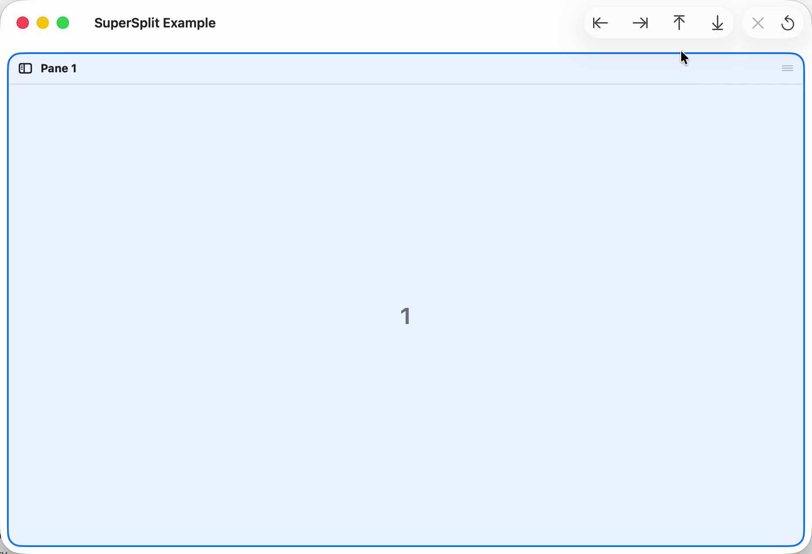
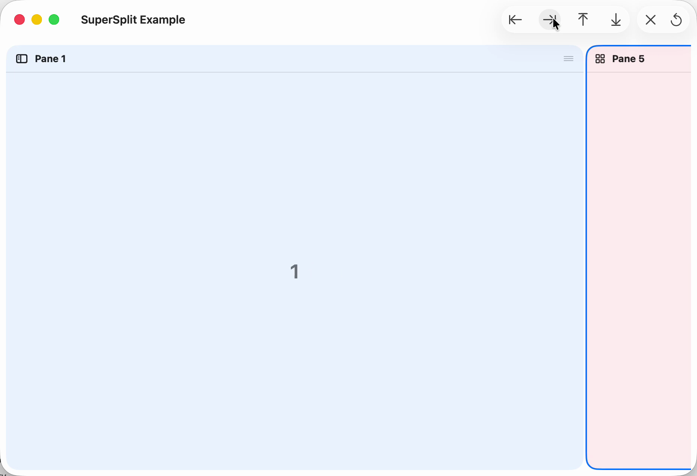
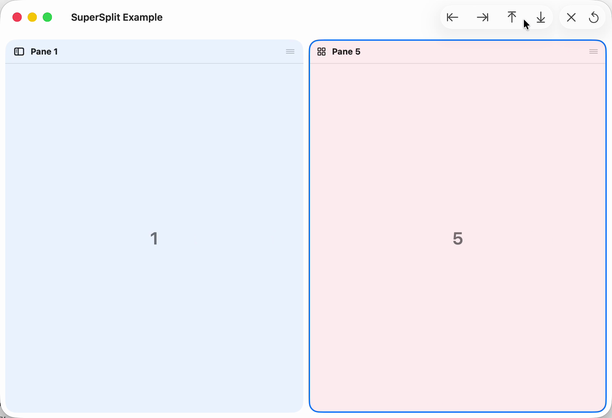
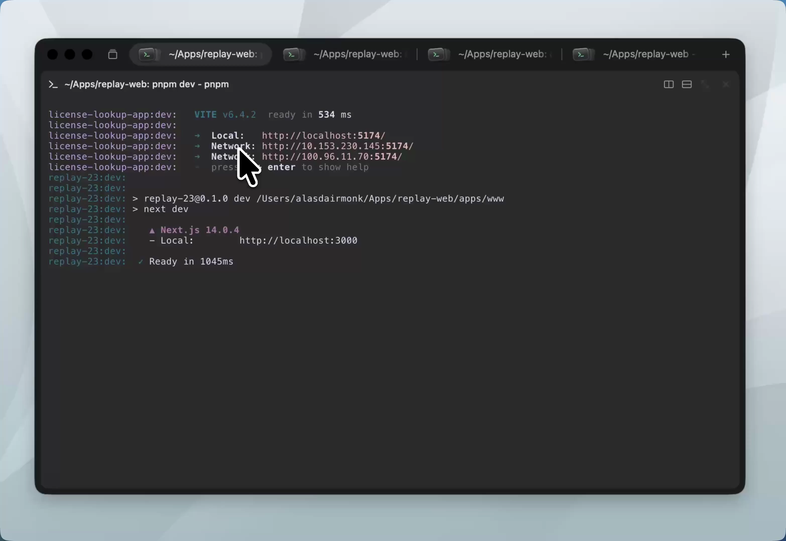
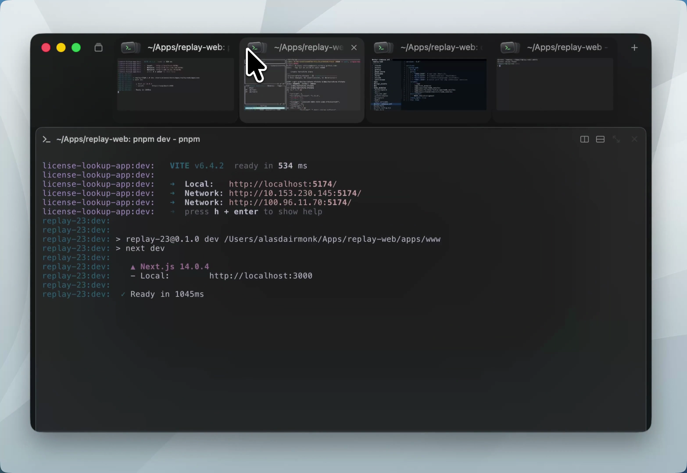
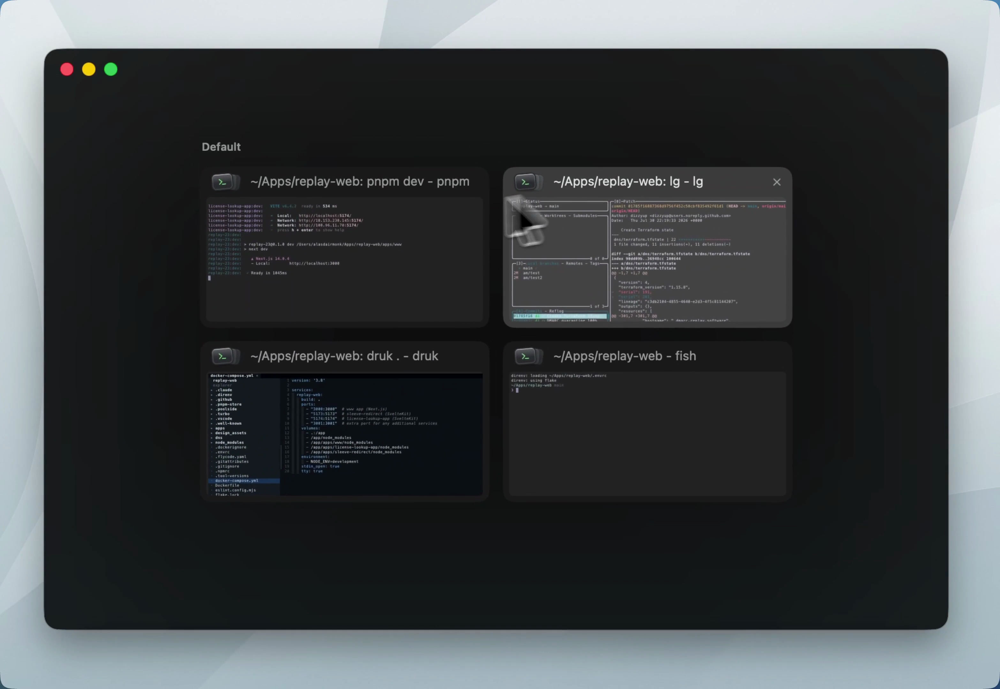
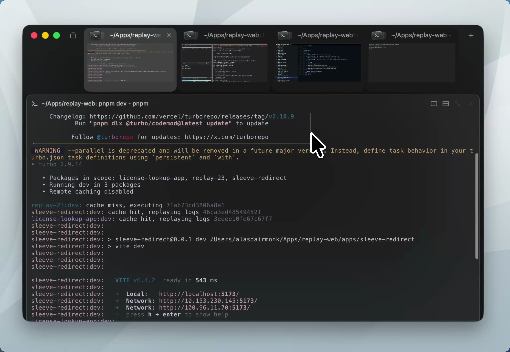

Research snapshot: these notes preserve inspected source versions and experiments from October 2026. They are research findings and candidate comparisons, not a claim about every later main-branch implementation.
Agent Studio · UI research notes · updated 31 October 2026
This is the UI research track. The companion covers where agents run, what a pane currently displays, and how to obtain that information. Both learn from Rex; UI performance and agent identity remain separate questions.
The target is our app: popovers, pane movement, sidebar collapse and resizing. The useful lessons from public code are about controlling lifetime, measurement and presentation. They do not require adopting another pane library or replacing SwiftUI across the app.
Our code already retains native pane hosts, suppresses identical geometry and reduces sidebar hosting measurements. Yet one interaction can still reach several layout and geometry paths. The first job is to identify which passes are necessary and which repeat work already done.
Popovers · Pane movement · Sidebar collapse · Resizing · Rex: actual video and binary findings · What to test first
Checked: source paths and existing guards in the UI worktree at 2fa2b16d671026fefbe9f79c7f8304c4f295afd5, plus primary Apple documentation and public code.
Reported timing: the newer separate-host Messages timing. Its exact build and raw capture were not independently verified here.
Proposed: the changes below are experiments with stated tradeoffs. No app code was changed or performance improvement measured in this research.
A small amount of our code can ask the framework to perform a large amount of layout. For example, measuring content, saving that measurement into view state, changing its frame and measuring it again spends much of its time inside framework functions.
The profile therefore identifies where CPU work happens. We still need to establish what requests that work, how often, and whether it changes the result. An app-owned AppKit shell can provide control, but the same measurement cycle can remain inside that shell.
This is a possible feedback cycle, not a claim of an infinite loop. SwiftUI's changed-value geometry callbacks and our equality guards can make it settle. The performance question is how many passes occur before it settles, and how much each costs.
| Work | Appropriate place | What improvement means |
|---|---|---|
| Read AppKit bounds; change view frames, constraints, focus and responder state | MainActor | A small, coherent native apply using the current geometry. |
| Prepare message display data; filter/group a large catalog; expensive non-UI derivation | Existing worker or actor, with values safe to send | Prepare once for the relevant input revision; publish only changed results. |
| Animate position, clipping and opacity of already-prepared content | Native presentation / Core Animation where suitable | Movement need not repeatedly change the content's layout size. |
| Necessary live content layout and drawing | Its framework/renderer owner | Preserve correct output while avoiding duplicate requests. |
Task { } inside a MainActor owner does not move its synchronous work off that actor. Equally, cheap rectangle arithmetic should not gain worker hops without evidence that it is expensive. AppKit view operations stay on their required executor.
What exists now: the checked host opens through SwiftUI's built-in .popover. The shared panel measures its header, rows and footer into local state, then uses those heights to determine the scroll area's frame. Message text can also report geometry back into preparation.
| Messages | Main thread busy | Application code | SwiftUI | AppKit layout |
|---|---|---|---|---|
| 7 | 496 ms | 35 ms | 390 ms | 166 ms |
| 11 | 481 ms | 26 ms | 400 ms | 176 ms |
These are the supplied copied verifier figures. The categories overlap; they are not a stacked breakdown. The earlier 327–400 ms used a different pane population and opening trigger, so it is not a valid before/after comparison.
There are two sizing participants: the presentation host and the content panel. The source confirms the measurement/state/frame relationship. Only the actual trace can establish which passes dominate the reported opening.
Proposed D105a comparison: an app-owned presentation/hosting boundary controls the outer dimensions and requests only the hosting sizing behavior it needs. Keep the same SwiftUI content and approved content-height behavior so the comparison isolates the shell.
Gain: potentially fewer host/content measurement rounds. Cost: we own anchoring, screen edges, dismissal, focus, accessibility and size changes. Developers maintain that shell; users pay if it clips or behaves differently. If the same content still spends most of its time in initial text layout, an owned shell alone may not help.
Apple explicitly documents that fewer hosting sizing options can reduce layout measurements when the frame is known. NSPopover.contentSize gives a size boundary; neither API promises that content layout disappears.
Compare the built-in host and owned-shell candidate on the same declared build inputs, machine, messages, three-pane population and card trigger. Record cold/warm opening separately, repeated layout/height publications, synchronous MainActor spans and actual visible presentation. Keep final-row scrolling, Details, filters, keyboard dismissal, selection and correct size as equal requirements. Lower body counts alone do not establish lower latency.
What exists now: the pane registry retains native hosts, and the representable returns the same wrapper. A cross-tab move preserves the pane ID. It also hides and reattaches moved surfaces, calls their display path and restores focus. The reuse branch still resets its size-report guard and schedules geometry verification.
What the real examples teach: a pane can receive its final content size before its visual entrance. Its position or reveal can then animate while its content dimensions remain stable. Hashimoto describes this for an incoming split, together with a flat native pane layout and a whole-layout drag overlay. Primary description.
Gain: less remounting and repeated lifecycle/geometry work, with fewer temporary content sizes. Cost: the native presentation owner must keep hit testing, responder focus, accessibility frames and occlusion correct during transitions. A true cross-window move still requires attachment and display-scale handling.
Important: our main pane strip is already flat. “Use a flat layout” is not a complete improvement proposal for this app. The new question is what changes underneath a move, how many times, and whether animation changes content size unnecessarily.
The June 25 video is a “SuperSplit Example” with numbered placeholder panes. It is useful motion evidence, but it does not exercise a real terminal's text reflow. View the original 40-second recording.



The distinction: the author describes placing the incoming pane at its final size before sliding it into view. That does not say every neighboring pane keeps its size. The recording visibly shows the pre-existing pane narrowing. This technique can avoid artificial intermediate sizes for the entrant while legitimate neighboring layout work remains.
The source recording is encoded at 120 frames/second; that is not an independent measurement of terminal performance. Its relation to the installed Rex beta's implementation is unverified.
Use a same-size move as a control, then a different-size move and a cross-window/scale move. Correlate stable host/surface identity, attachment changes, visibility-pass count, actual pixel commits, focus and visible frames. Compare a move with and without drawer children. Source paths do not give those counts by themselves.
What exists now: the shell uses native split-view items. Collapse changes isCollapsed, adjusts subviews and forces layout. Expansion can also restore the saved width with additional layout attempts. The sidebar hosting controller already sets sizingOptions = [].
The consequential finding is downstream: terminal geometry synchronization has two entry paths. The split-view resize delegate calls it directly. Changed terminal-container bounds separately schedule restoration and another geometry sync. Native mount layout also has its own size reporting.
This drawing shows possible calls, not a measured count for a collapse. The bounds publisher ignores empty/identical bounds, and the scheduled restore task cancels its previous queued task. Those protections matter. A started pass can still walk visible terminals and force geometry sync.
First candidate: settle the same layout generation through one existing native geometry owner, so the split delegate and bounds callback do not independently force the same final work. Preserve the separate need to mount deferred content when trusted bounds first become available.
A sidebar collapse normally gives the workspace a genuinely different width. That change cannot simply be dropped. The visual transition has two credible shapes:
| Shape to compare | Gain | Cost and who bears it |
|---|---|---|
| Live content resizing | Content tracks the available width throughout the transition. | Real reflow/layout work during the transition. Developers must keep each update bounded; users see jank if it misses presentation deadlines. |
| Commit endpoint geometry, animate a reveal | Content can adopt the final dimensions once; movement/clip handles the transition. | Temporary cropping and input/accessibility geometry need careful treatment. Developers own that complexity; users may prefer live resizing. |
| Keep the native transition, remove redundant sync only | Smallest behavior change and easier comparison. | Necessary native layout/reflow cost remains. It may not be sufficient. |
Recommended first comparison: preserve current behavior and isolate duplicate synchronization before changing the sidebar's visual contract. If those passes are cheap and actual intermediate resizing dominates, compare the transition shapes instead. The source does not prove a particular animation policy or pass count in the running app.
Compare expand and collapse separately with one and several visible terminals, including a real-sized sidebar. Count native bounds changes, direct and scheduled sync entries, force-layout calls, changed pixel commits and queued restores that actually start. Check the final sidebar width, pane bounds, cursor/focus and unchanged row correctness. A short synchronous toggle-handler duration does not cover work scheduled after it returns.
What exists now: divider gesture updates dispatch workspace resize commands. Those publish ratios and start prepared-content geometry checks. SwiftUI derives strip frames; mount layout, scroll-wrapper layout and surface frame callbacks can report sizes. The final pixel/scale comparison suppresses duplicate size setting, but its unchanged branch still requests a render refresh.
Proposed contract: make the owner that applies native geometry responsible for consolidating equivalent proposals. Latest-state geometry may be combined; lifecycle and focus facts must retain their order. This is not a new global event system or a license to delay all updates until dragging stops.
Gain: fewer repeated full layout/geometry passes before presentation. Cost: the existing owner needs clear ordering, final-flush and retirement behavior. Developers pay the complexity; users pay if content follows the pointer late or ends at a stale size.
We already have useful guards: unchanged mount sizes are suppressed, final pixel/scale commits compare equal, and the pinned Ghostty core avoids font-grid rebuilding when effective DPI is unchanged. The task is to reduce work before those guards and measure whether refresh requests are actually redundant.
2fb0c9ca Ghostty gitlink. This is source equivalence for the vendor pin, not proof of the measured binary's identity.The existing divider_frame probe starts after dispatch and settles at a SwiftUI layout preference. It is not an end-to-end terminal-frame presentation measurement. The retained sidebar workload explicitly records its divider coverage gap. Compare actual resize presentation, MainActor occupancy, size-call/commit counts and final geometry separately.
| Existing behavior | What it protects | What it does not establish |
|---|---|---|
| Stable pane ID, registry host and native wrapper | Moving a pane need not create a new session/view. | No repeated layout or lifecycle work. |
| Flat active pane strip | Direct sibling placement; stable keyed pane identity. | Arbitrary two-dimensional composition or cheap callbacks. |
| Reduced sidebar hosting sizing options | Avoids automatic min/ideal/max hosting constraints there. | No expensive descendants, forced layout or terminal geometry work. |
| Changed-value and final geometry guards | Suppresses some identical publications and C size calls. | Work above the guard is cheap or necessary. |
| Queued restore task cancellation | Some obsolete pending work is cancelled. | Started passes are combined or downstream work is free. |
| Checked example | Concrete lesson | Limit |
|---|---|---|
| SuperSplit development description | Keep logical split structure separate from flat displayed rectangles; size an incoming pane before its slide/reveal; make drag overlays independent of pane content. | Developer-described framework behavior, not current-beta source or a benchmark of our app. |
| SwiftUI content with native animation hosting | Content can remain SwiftUI while the native owner coordinates movement and focus visuals with Core Animation. | Does not reveal Rex's popup sizing or prove a framework-wide replacement helps. |
| Superlogical's live Metal preview cards | The demonstrated overview presents small live previews while the full terminal keeps its layout dimensions. This does not establish that the live terminal NSView is moved or reparented to make a card. | The post does not reveal texture reuse, a second render target, or the AppKit hierarchy. Those implementation questions remain open; the demo is not a verified sidebar-collapse blueprint. |
| Public Bonsplit animator | A display link gives animation cadence, but its ticks still change native divider positions on MainActor. “Native” and advertised frame rate are not proof of low work with our content. | This is a different library and nested split approach. No adoption is proposed. |
| Apple hosting sizing options | When the container knows the frame, avoid asking the host for sizing information it does not need. | Required SwiftUI content layout remains. |
The cited first-party UI posts were read directly. Development demonstrations are kept separate from installed-binary observations.
Correction: the earlier “move a viewport” wording conflated visible presentation with moving/reparenting a live native pane. The screenshot and post establish live Metal previews and unchanged full-terminal layout dimensions. They do not establish the native object arrangement.
| Thing | What it means | What the post establishes |
|---|---|---|
| Full terminal content geometry | The dimensions used to lay out its content. | The peek interaction is described as keeping these dimensions, avoiding reflow. |
| Interactive pane's native view | The AppKit object that hosts input and normal display. | No evidence of where it is parented or whether it is translated, hidden or otherwise handled during peek. |
| Small live preview | A second visual presentation of the terminal's current contents. | Metal-rendered and live-updating. Shared texture, separate render pass and update scheduling are not specified. |
A preview can be a different presentation of existing content without being the original pane's NSView. AppKit's one-parent rule applies to a view object, not to how often content can be rendered. It therefore does not answer how Rex makes these previews. The actual preview pipeline needs source or discriminating runtime evidence; it must not be filled in from this screenshot.
The full terminal and its small preview have different display sizes without requiring different terminal layouts. That is the useful distinction. A preview card becoming smaller does not by itself require giving the running terminal program fewer columns. The author explicitly describes keeping the full terminal's dimensions during peek. The implementation that connects terminal contents to the small Metal presentation is still unpublished in the sources located here.
I retrieved and inspected the August 12 original, rather than using its poster image to infer the animation. View the original 13.52-second video. These are extracted source frames at the stated playback times:




What this corrects: the large terminal visibly moves during peek; that does not mean its native view becomes one of the small cards. I previously blurred those two statements. Neither the video nor the one-parent rule tells us whether Rex reuses a rendered texture, renders the same terminal state into another target, or refreshes an intermediate image.
Yes: the deeper pass recovered one actual preview-to-renderer path. A Terra researcher inspected the installed arm64 Rex 0.1.0 build 1670 using static metadata and targeted disassembly. I independently checked the decisive instructions, field offsets, class metadata and artifact identity. This path is not yet connected to the older tab-peek feature. No running process was attached or profiled.
TerminalPreviewSurface has an actual SwiftUI.NSViewRepresentable conformance. Its makeNSView and updateNSView entries lead to the native wrapper's construction and update paths. This is verified use of SwiftUI in this installed component, rather than an inference from imports.GhosttyRender.PlatformRenderView when the stored render view is absent, then retains that view in the wrapper.GhosttyRender.SharedTerminal into a renderer-core routine. This establishes a real handoff; the name alone does not establish that two presentations share state or textures.swift-ghostty_GhosttyRender.bundle with a Metal library. The traced class/factory path is stronger evidence than this bundle's presence alone.TabTearOffWindowPreviewView is another candidate with image/surface-related fields. A tear-off preview must not be substituted for the tab-peek pipeline without a caller chain.What this adds: this candidate bridges SwiftUI into a native wrapper with a separately constructed render view. The update checks the stored renderer before creating one. The higher-level view constructing this representable, its relationship to settings versus tab peek, and its exact rendering-resource reuse are separate questions. Instruction map, commands and exact artifact identity.
Lesson for our app: SwiftUI can declare a component while a native object owns its rendering view and receives updates. Our app already uses this kind of bridge. The mere presence of SwiftUI therefore does not explain the performance difference; we need to examine what each update measures, recreates or resizes. This trace does not establish that Rex preserves this wrapper across every tab or pane move.
Conformance record 0x1013c6e28 resolves to SwiftUI.NSViewRepresentable and type descriptor 0x1014a39e8, named TerminalPreviewSurface. Its make/update requirement entries resolve to 0x10041c128 and 0x10041c12c, which branch into the wrapper's construction/update routines. These relative records and SwiftUI symbol fixups were independently decoded from the on-disk Mach-O.
The wrapper's renderView offset is loaded and checked at 0x10041c318–324. The absent-view branch obtains class metadata at 0x100f456fc, resolving to the NSView class GhosttyRender.PlatformRenderView, and calls its allocating initializer at 0x10041c424. The terminal-related handoff appears at 0x10041c5c0–5f4; the new render view is stored at 0x10041c670. The wrapper's substantive initializer at 0x10041c684 stores the terminal reference and rows. The earlier filename-bearing method at 0x10041c748 is an initWithCoder: stub, not that constructor.
These are static instruction/metadata observations in build 1670. They do not establish the historical feature's entry point, initial terminal creation, exact grid width, frame cadence or texture identity.
Its frame callback goes directly through a native render core. The binary now gives us more than a list of UI frameworks:
DrawablePresentationLayer, a subclass of CAMetalLayer, and assigns a rendering device.displayLinkDidFire: and installs it on the main run loop in common modes. It requests a preferred frame-rate range; that is not a measured frame-rate guarantee.needsRender and additional state. Both the render-request callback and the end of a tick use its result to set the display link's paused state. This is not simply “draw whenever new terminal bytes arrive.”The useful separation: SwiftUI component updates, native layout and terminal-pixel updates have different paths. The traced frame path calls the native core and renderer; it is not a SwiftUI view-body measurement loop. That does not establish that the whole app avoids SwiftUI layout, that all rendering preparation is off-main, or that this component meets a particular latency budget.
The backing-layer factory at 0x100f43c0c resolves class metadata 0x1018de5b0, independently identified as DrawablePresentationLayer : CAMetalLayer. The window-attachment path calls displayLinkWithTarget:selector:, mainRunLoop and addToRunLoop:forMode: around 0x100f440a8–44128. Objective-C stub selectors and their dyld fixups were independently decoded.
The callback 0x100f44f24 gets the layer and timestamp, then calls the core at 0x100f4809c. Core source/drawable-size checks precede the renderer call at 0x100f481e0. The pause decision uses 0x100f48914, with isVisible, needsRender and other core fields. The installed render-request closure reaches the same decision through 0x100f43ac0. The entire work predicate, source witness implementation, Metal command submission and actual on-screen presentation were not recovered as a complete chain. No runtime performance claim follows from these static paths.
The inspected preview explicitly sets automaticallyResizesTerminal to false on its render core. We traced the corresponding guard: it skips one automatic path that forwards the core's computed grid dimensions through the terminal source. The core still stores its own computed layout/grid values.
Why this matters: the renderer's display rectangle and the terminal's content dimensions can have an explicit boundary between them. Rendering a view and deciding the terminal's grid size are separate responsibilities. This candidate also has another wrapper-owned terminal-update call, so the evidence does not say “the terminal is never resized.” Nor does it connect this setting to the historical tab peek.
The preview passes zero to 0x100f421d4 at 0x10041c5b8–5bc. That setter writes core offset 0x188, independently named automaticallyResizesTerminal in metadata. The forwarding helper tests that byte at 0x100f48d50–58 and exits when it is not enabled. Core layout writes its grid values at 0x100f4952c–30 before reaching that helper.
When enabled, the helper forwards the grid values through a source witness to a terminal-internal routine. That final stripped routine's full effects were not independently characterized. The separate wrapper path calls another terminal routine at 0x100e75620; the automatic-size guard does not remove it.
What we can learn now: separate terminal layout dimensions from the size and position of a preview presentation. Rex's public split description also separates logical split structure from displayed rectangles. These are useful boundaries for our dynamic pane work. They do not establish that Rex avoids SwiftUI everywhere, or that its particular preview renderer fixes our popover measurement costs.
The decisive missing link is how the preview obtains current terminal content: a shared rendered resource, a separate render target using shared terminal state, or another refreshed representation. Matching source or a symbolized build containing the demonstrated feature could settle it. The installed beta is not established as the build in the August video; the owner reports that peek is not exposed there.
The founder publicly described a Swift Metal renderer and separate emulation, rendering and terminal layers. Those descriptions and the packaged bundle are consistent leads, not a traced preview implementation. No matching public GhosttyRender/SuperSplit/SuperTabs source was located in the checked first-party repositories and exact code searches.
The downloaded recording is 3132 × 2160, encoded at 60 frames/second, with no audio stream. Encoding rate does not measure the app's rendered frame rate, latency or power cost. The original public videos were inspected directly; credited frame excerpts are preserved here.
Research disposition: public descriptions and original videos are checked. The installed binary establishes a SwiftUI representable, its native wrapper, Metal backing-layer construction, display-link/core work path and a guarded automatic-size boundary. The exact older peek implementation is not established. The metadata references inspected belong to this representable's own field and conformance records, not a higher-level view constructing it. These results must not be combined into an invented historical peek pipeline.
Start with the measured popover opening, then the two geometry-sync paths. These have the strongest evidence of a real slow interaction and a concrete source mechanism, respectively. Layer-assisted motion is a subsequent comparison, not a substitute for understanding the work already requested.
For each comparison, pin the build and fixture, keep the same machine and trigger, include realistic pane/sidebar populations, separate cold/warm cases and repeat enough to expose variation. Record actual visible completion or frame pacing as well as synchronous MainActor spans. A timer spanning await is not proof the UI thread was continuously occupied.
Reject a faster result that changes the job: clipped content, unreachable last rows, lost selection/focus, stale bounds, invalid display scale or unresponsive live dragging. Unit tests and static source checks cannot establish the performance gain.
These experiments require their own isolated declared build and execution scope. They have not been run here. The separate Rex research includes public-video inspection and static binary inspection; it does not measure our app's performance or implement a candidate.
A repo view or saved arrangement should choose existing pane IDs and a placement plan. It should not silently recreate terminals or become a new owner of their lifetime. Our live pane host has one native parent at a time. A preview is another visual presentation and need not be that same host moved into a second parent; this report does not infer Rex's view hierarchy from that AppKit rule.
That model enables composition, but does not make it fast by itself. Its performance contract is concrete: stable content identity, changed placements only, necessary final dimensions, correct focus/visibility and bounded UI application.
The UI source walkthrough used 2fa2b16d671026fefbe9f79c7f8304c4f295afd5. That snapshot is not the exact independently verified binary behind the supplied newer separate-host profile. Earlier identity research used 2fa1b73c5. These versions are not combined into a current-runtime verdict.
Source controls and source-only candidates are named next to each interaction. The source register preserves the earlier pane/Rex research, direct source links, corrections and the successful Chief/Sun relay. Old protocol research is background there, rather than the explanation of UI speed.
This page is one standalone HTML file with inline diagram sources. The shared Demistify theme/runtime need network access. Authoring lint checks markup and supported diagram syntax; it does not prove visual rendering, native behavior or performance. Visual/browser behavior was not independently certified.